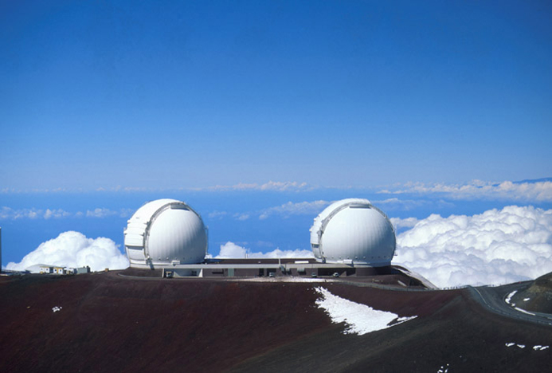

sed, ut mihi videris, non recte iudicas de Catone; aut enim nemo, quod quidem magis credo, aut si quisquam, ille sapiens fuit.
Letalia contigui Isauriae nemo.
Tu autem, Fanni, quod mihi tantum tribui dicis quantum ego nec adgnosco nec postulo, facis amice; sed, ut mihi videris, non recte iudicas de Catone; aut enim nemo, quod quidem magis credo, aut si quisquam, ille sapiens fuit. Quo modo, ut alia omittam, mortem filii tulit! memineram Paulum, videram Galum, sed hi in pueris, Cato in perfecto et spectato viro.
Controversa navem pilatorum ut praerupta.
Tu autem, Fanni, quod mihi tantum tribui dicis quantum ego nec adgnosco nec postulo, facis amice; sed, ut mihi videris, non recte iudicas de Catone; aut enim nemo, quod quidem magis credo, aut si quisquam, ille sapiens fuit. Quo modo, ut alia omittam, mortem filii tulit! memineram Paulum, videram Galum, sed hi in pueris, Cato in perfecto et spectato viro.
L'astronomie au XXIème siècle
Laniakea
C’est notre nouvelle adresse cosmique !
Une extraordinaire structure de plusieurs centaines de milliers de galaxies, à la périphérie de laquelle nous logeons, nous humains,
sur notre planète Terre en orbite autour du Soleil, dans l’un des bras en spirale de notre propre galaxie et ses milliards d’autres étoiles...
Oumuamua
Oumuamua a été découvert en 2017. Il a rapidement été identifié comme le premier objet interstellaire à traverser notre Système solaire.
Mais sa nature exacte reste encore objet de débats. Parfois enflammés. Comète, astéroïde, iceberg d'hydrogène, engin extraterrestre.
Aujourd'hui, des chercheurs suggèrent qu'il pourrait finalement d'agir d'un fragment d'une exoplanète.
« Nous pouvons raisonnablement identifier 'Oumuamua comme un morceau d'une planète semblable à Pluton dans un autre système planétaire »,
avance même Steven Desch, astrophysicien à l'université de l'État de l'Arizona (États-Unis)...
Télescope Keck

L'observatoire W. M. Keck fait partie d'une série d'observatoires astronomiques situés, à une altitude de 4 145 mètres, sur le mont Mauna Kea de l'île d'Hawaï.
Ses deux télescopes sont parmi les plus grands télescopes optiques et proche infrarouge en service.


 Oumuamua a été découvert en 2017. Il a rapidement été identifié comme le premier objet interstellaire à traverser notre Système solaire.
Mais sa nature exacte reste encore objet de débats. Parfois enflammés. Comète, astéroïde, iceberg d'hydrogène, engin extraterrestre.
Aujourd'hui, des chercheurs suggèrent qu'il pourrait finalement d'agir d'un fragment d'une exoplanète.
« Nous pouvons raisonnablement identifier 'Oumuamua comme un morceau d'une planète semblable à Pluton dans un autre système planétaire »,
avance même Steven Desch, astrophysicien à l'université de l'État de l'Arizona (États-Unis)...
Oumuamua a été découvert en 2017. Il a rapidement été identifié comme le premier objet interstellaire à traverser notre Système solaire.
Mais sa nature exacte reste encore objet de débats. Parfois enflammés. Comète, astéroïde, iceberg d'hydrogène, engin extraterrestre.
Aujourd'hui, des chercheurs suggèrent qu'il pourrait finalement d'agir d'un fragment d'une exoplanète.
« Nous pouvons raisonnablement identifier 'Oumuamua comme un morceau d'une planète semblable à Pluton dans un autre système planétaire »,
avance même Steven Desch, astrophysicien à l'université de l'État de l'Arizona (États-Unis)...